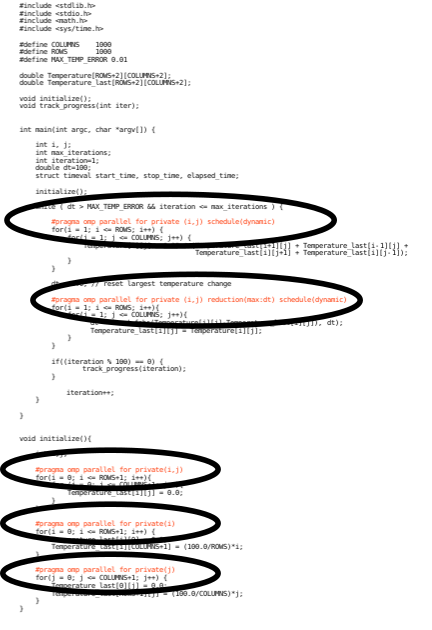

Parallel Overhead¶
Complicating Amdahl’s law, parallel lines of code also adds to the total lines of code.
The lines of code circled in the image above, shows only 5 lines of code. But these lines of code get expanded to lines of code that sets up the parallel environment. These lines of code take execution time. This is referred to as parallel overhead, it’s the performance cost you take on to be able to utitlize parallel computing.
Tip
In practice, you would never measure the theoretical limit of your performance gains. Since adding parallel computing usually only takes a few lines of code, it is almost always quicker to just add parallelization and observe your performance gains.